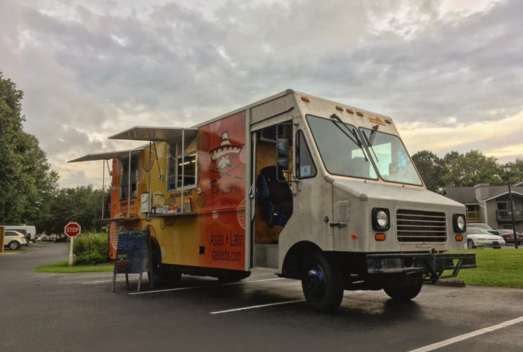
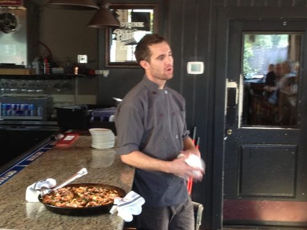
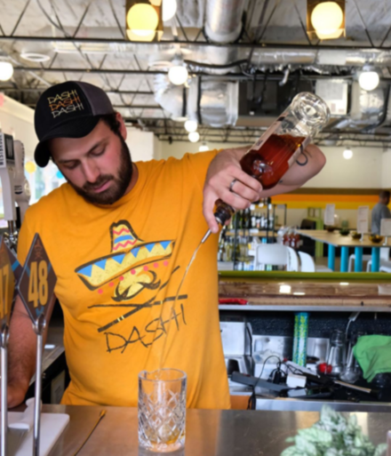

Dashi Food Truck
How it all Started
In 2015, Oscar Hines owned a local Charleston company called "Charleston Food Tours''. One of his stops was a restaurant downtown called Prohibition. Stephen Thompson was the chef at that restaurant. Oscar would come by often with his tour group and was thoroughly impressed by Stephen's food. After striking up a conversation about his food, Stephen mentioned his love for food and dream of having a food truck part time with Latin and Asian flavors. Shortly after, Hines agreed to purchase the food truck, with Thompson as the Chef and creator of the food. Part time turned into full time and the truck would go all over Charleston. Dashi primarily visited businesses in North Charleston, held private events, and participated in public food truck events. They became the best food truck in Charleston by Charleston City paper in 2017.
In 2019, the food truck was such a success that Hines and Thompson decided to open a restaurant in their main clientele area of North Charleston, purchasing a property on Remount Road.
Since then, the restaurant has been open for lunch and dinner, and the food truck goes out regularly.
Vision - Dashi would like to eventually expand to other parts of Charleston and South Carolina. Our vision is to become a small chain in the greater Southeast!
Mission - Our mission is to provide the best of Latin & Asian food and Drink in South Carolina with fast, unintrusive counter service
Owner Oscar Hines
Oscar Hines grew up in Virginia. After receiving his Master's in Law, Hines became a lawyer in a small town in Virginia. After practicing law for 15 years, Hines left Virgina and moved to Charleston. Falling in love with the Charleston food scene, Hines partnered with others and created "Charleston Food Tours", where he founded his relationship with Thompson
Chef Stephen Thompson
For Chef Stephen Thompson, the art of preparing food is more than just a job or even a passion—it’s a way of life. Thompson has spent almost his entire life in the kitchen, and this is where he feels the most at home. “I don’t have any worries there,” he says. “I just focus on what needs to be done.”
With a culinary degree from the Art Institute of Charleston and years of hands-on experience in a variety of different kitchens and atmospheres, he is excited to be the Executive Chef at Prohibition, where he has been able to really let his creativity shine. Owners, James Walsh and John Teevan obviously know talent when they see it. They did everyone a huge favor when they gave Thompson carte blanche to do whatever he felt inspired to do for their new menu.
Chef knew that great cuisine had to start from the roots—quite literally. So, he went straight to his childhood friend and now farmer, Stephen Walters of Walters Farms. It always helps to have a special relationship with the source of your main ingredients and these two are like peas in a pod when it comes to caring about great produce. Walters personally grows and harvests everything on his 5-acre farm in Saint George, South Carolina, then makes the 45-minute drive to deliver it to Thompson. The vegetables he picks in the morning are often found on a customer’s plate later the same day!
- 
- 
General Manager Paul Brylinski
Paul Brylinski grew up in Buffalo, NY and has always had a love for food and beverage. In 2012 he attended The Restaurant School at Walnut Hill College in Philadelphia, PA where he received an associates degree in Restaurant Management. He worked with High Street Hospitality as they were awarded Best New Restaurant 2014 by Food and Wine. In 2015 Brylinski moved to Charleston and joined the team at Butcher and Bee. He met Thompson and Hines in 2019 and joined the crew to open Dashi on Remount Road that year.
- 